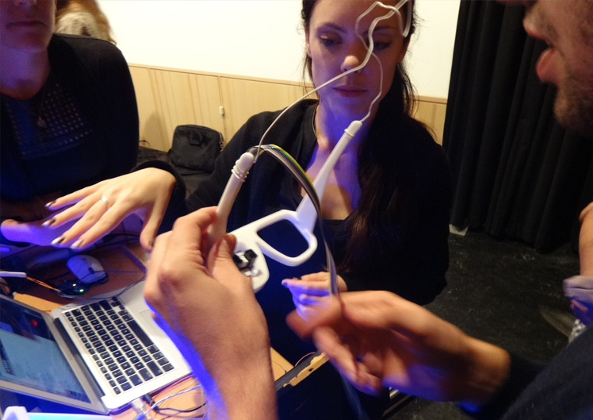

Designing within Connected Systems
Workshop at DIS 2018 conference
Hong Kong, June 9 + 10, 2018
Workshop
This workshop invites scholars, practitioners and students of design and design research, especially those with a keen interest in designing for performances, musical expression and blurring the line between designing and using. During this workshop you explore how to design in the context of distributed, networked interfaces, dynamic input-output mappings and emergent aesthetics. You do this in the context of group music performance.
Workshop Aims
In this workshop we aim to bring together individuals from industry and academia that have an interest in designing novel interfaces to complex connected products and in exploring how such interfaces can be designed in collaborative means.
The workshop aims are:
- Discussing different positions on joint networked performances, i.e., systemic designs that are designed from connected components operate as a system, with distributed interfaces.
- Hands-on experience with musical expression and related technologies first, and the design experience of evolving a set of individual musical instruments towards a musical system.
- Exploring and discussing approaches to co-design highly networked components of a system and generally the slow adoption of systemic designs in the DIS community.
- Develop a roadmap and agenda for greater engagement with the DIS community: brainstorm and document key barriers and issues (e.g., technological complexity), research directions, and training or education necessary.
- Discuss educational opportunities for teaching design in the context of systemic qualities and constraints.
- Produce an overview of the value of designing systems at DIS and in the wider HCI community.
Workshop Schedule
The workshop moves through two days of discussion and reflection, spurred most of all by hands-on design and performance. Using Leap Motion controllers and Processing you will iteratively develop digital musical interfaces that are interconnected and can influence each other’s performance. As a result a highly dynamic and exciting musical system will come into existence, one where input and output are instable and surprising. The workshop ends with one or more group concerts on your own designed digital instruments, and with a theoretical discussion. Recordings of the concerts will be made available to you at the end of the conference. No prior experience in Leap Motion, Processing or music performance is required. We bring materials, examples and support.
How to participate
 We invite designers, researchers and practitioners from all backgrounds to participate in our workshop. Participants are invited to submit a 2-page position paper (preferably SIGCHI Extended Abstract format), in which they explore the implications of the Internet of Things on our designed life-world. Questions addressed could be: what does the Internet of Things mean for the profession of (interaction) design? How do we design for and with the Internet of Things in such a way that it can seamlessly blend into our everyday lives? What does it mean when everyone in the world becomes the user of a distributed experienceable system?
There is no hard deadline for your position paper submission, nor will the position paper be published directly. Instead, we aim for proactive participation in the workshop which will result in a joint publication. Please email your Extended Abstract submission as a PDF to b.j.hengeveld( AT )tue.nl.
To register for this workshop, please go to https://www.regonline.com/registration/login.aspx?eventID=2210853 and register for both the workshop and for at least one day of the DIS 2018 conference. Then send a copy of your registration confirmation email to b.j.hengeveld( AT )tue.nl for registration to this specific workshop.
Team
Mathias Funk is assistant professor in the Department of Industrial Design at Eindhoven University of Technology. He has a background in Computer Science and a PhD in Electrical Engineering. His research interests include complex systems design (for musical expression), designing with data, and design tools. He is trained a drummer and percussionist, and also an active electronic musician.
Bart Hengeveld is assistant professor in the Department of Industrial Design at Eindhoven University of Technology. He has a background in Industrial Design and music. He is a skilled bass player and composer. His research interests include the aesthetics of dynamic interfaces, the body language of the Internet of Things and the role of sound in interaction design.